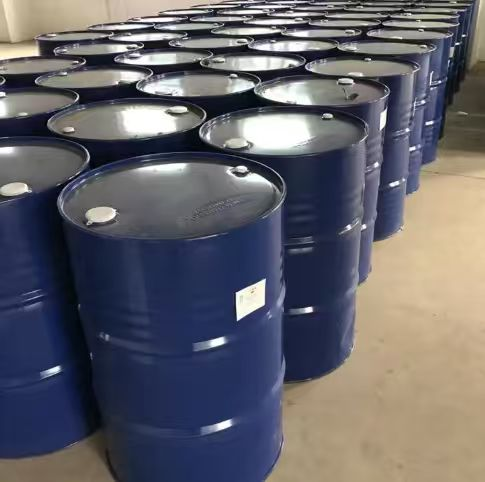

PVC 片材与薄膜
用于需要柔韧性、加工性和环保资料支持的 PVC 软制品。
ESO 环氧大豆油
ESO（环氧大豆油，ESBO）是常用于 PVC 体系的辅助增塑剂和热稳定辅助材料，适合片材、薄膜、电缆料及出口环保应用的资料沟通。

产品介绍
环氧大豆油是以大豆油为原料制得的环氧化产品，在 PVC 配方中常作为辅助增塑剂和热稳定辅助材料使用。它可帮助改善制品加工表现，并用于需要更完整环保资料沟通的出口客户场景。

ESO 已整理水印版 MSDS 与 CTI 检测资料，方便客户进行出口、采购和内部质量沟通。COA、TDS 或批次资料可按询盘需求提供。
应用方向
ESO 的核心价值在于辅助增塑、辅助热稳定和更完整的出口资料配套。
用于需要柔韧性、加工性和环保资料支持的 PVC 软制品。
可作为配方中的辅助材料，服务电缆料、胶管和一般软质 PVC 应用。
MSDS 与 CTI 资料入口可帮助客户快速完成采购和出口前期沟通。
销售联系
请留下数量、用途、目的地和所需资料，我们会尽快通过邮箱回复。